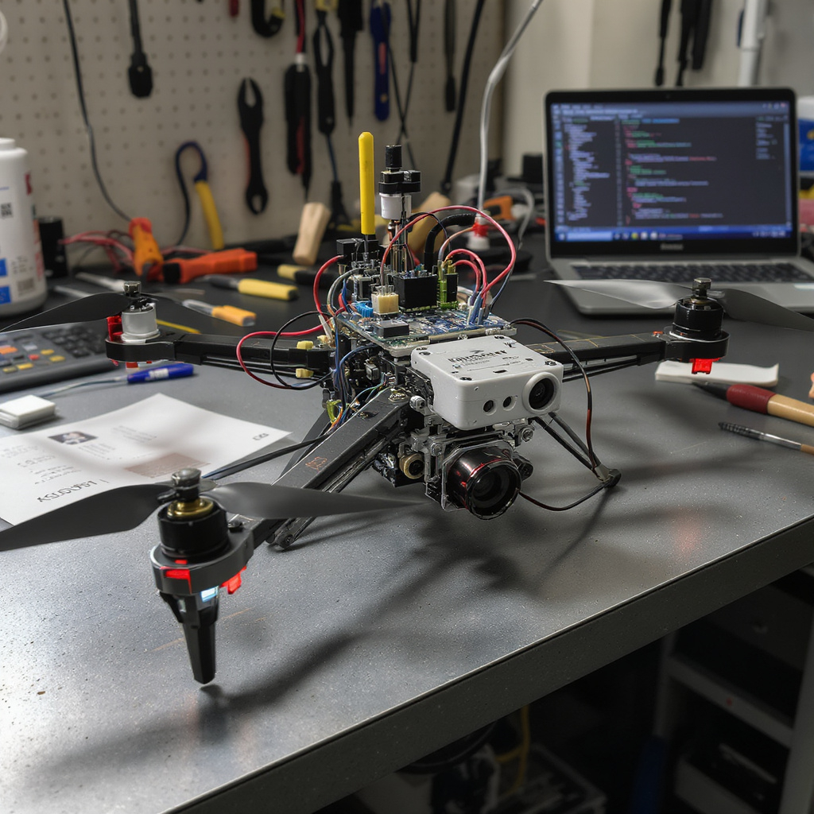

Multimodal AI Researcher
Signal Processing, Computer Vision, LLMs
Transforming complex data into intelligent solutions through cutting-edge research in signal processing, computer vision, and large language models.
Explore My WorkAbout Me
Electrical Engineering graduate with research experience in advanced signal processing for 4D flow MRI. I am passionate about developing innovative approaches that connect theoretical research with practical applications.
My current focus is on multimodal AI, exploring the integration of signal processing, computer vision, and large language models to build intelligent and impactful systems.
Signal Processing
Research in advanced methods for 4D cardiac flow MRI reconstruction, complex data analysis, and optimization of reconstruction algorithms for improved medical imaging.
Computer Vision
Development of robust image processing pipelines, object detection frameworks, and visual understanding systems using YOLO and other state-of-the-art techniques.
Large Language Models
Working with transformer-based architectures, fine-tuning, and instruction-following systems to develop intelligent applications powered by LLMs.
Research & Development
Published research at ESMRMB 2025 on 4D flow MRI, focusing on optimization of reconstruction algorithms, GPU-accelerated processing, and advanced visualization and quantification of blood flow dynamics.
Featured Projects

4D Cardiac Flow MRI Reconstruction
Pioneered advanced algorithms for 4D cardiac flow MRI, enhancing cardiovascular diagnostics with anomaly-resilient reconstruction and GPU-accelerated processing.

GAN-based T1-T2 MRI Conversion
Developed a CycleGAN model to seamlessly convert T1–T2 MRI sequences, optimizing scan efficiency and improving patient outcomes.

YOLO-based PCB Defect Detection
Engineered a real-time defect detection system for printed circuit boards using a YOLO architecture, improving manufacturing quality control.

Multimodal AI Systems
Integrating AI solutions combining multiple data modalities for comprehensive analysis and decision-making in complex environments.